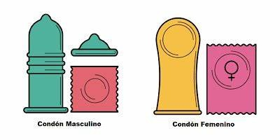

Condones (Masculino y Femenino)
El condón es uno de los métodos anticonceptivos más conocidos y utilizados. Funciona como una barrera física que impide que los espermatozoides entren al útero. Es el único método que también protege contra enfermedades de transmisión sexual (ETS).
Tipos de condones
- Condón masculino: Se coloca sobre el pene erecto antes de cualquier contacto sexual.
- Condón femenino: Se introduce en la vagina y cubre parte de los genitales externos.
¿Cómo funcionan?
- Evitan que el esperma llegue al óvulo.
- Protegen contra el VIH y otras ETS.
- Se usan una sola vez.
Ventajas
- Alta eficacia (hasta 98%).
- No necesita receta médica.
- Fácil acceso y uso.
Desventajas o riesgos
- Puede romperse o deslizarse.
- Alergia al látex (hay opciones hipoalergénicas).
- Debe usarse desde el inicio.
Consejos para un uso correcto
- Revisa la fecha de caducidad.
- No uses objetos filosos para abrirlo.
- Lubricantes de agua o silicona, no aceites.